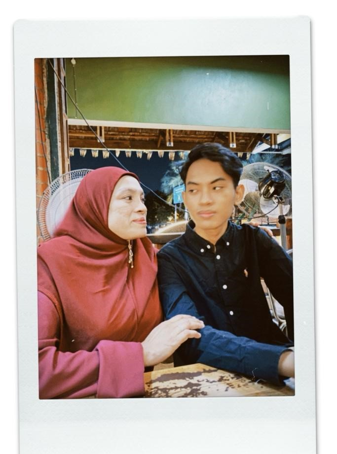
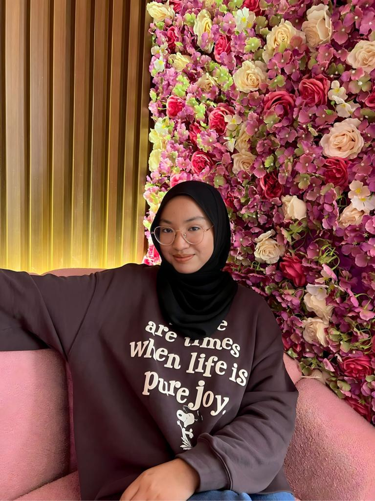

Me Family
At the core of my narrative lies the bedrock of family - a unit that has been instrumental in shaping the person I have become. Born into the embrace of the Khairuzzaman family, I was nurtured by a support system that laid the foundation for my journey through life. My Parents, Mom and Dad, were the guiding lights in my formative years. Their unwavering support and encouragement provided me with the confidence to pursue my dreams and navigate the twists and turns of life. My Siblings, Nur Izzati and Sufiah Syahirah, added dynamic layers to my familial tapestry. Through shared laughter, occasional disagreements, and the unbreakable bonds of siblinghood, I found both companionship and invaluable life lessons. Although family traditions were woven into the fabric of my upbringing, I'm still standing within my own principal. These traditions not only fostered a sense of belonging but also created lasting memories that would be cherished for years to come. My family support extended beyond the immediate household. Family gatherings were occasions for shared stories, delicious meals, and the reaffirmation of a profound sense of belonging. Through the flow of life, I leaned on the strength of family during both joyous celebrations and challenging moments. The bonds forged within the crucible of family have not only provided a sense of identity and belonging but have also served as a source of resilience and inspiration.